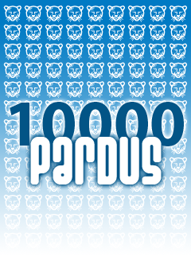

EMO Ankara Şubesi
10.000 Pardus dağıtıyor
 Meslek örgütleri de "Özgürlük İçin..." dedi
Meslek örgütleri de "Özgürlük İçin..." dedi
2007 yılında 30. yaşını kutlayan EMO Ankara Şubesi daha önceki yıllarda Linux ve Özgür Yazılıma verdiği desteği Pardus 2007 için de somut olarak ortaya koyuyor. Tam 10.000 adet Pardus 2007 kurulum CD'sini üyelerine ve EMO-Genç olarak nitelenen Elektrik Elektronik Bilgisayar Biyomedikal Mühendisliği bölümleri öğrencilerine ücretsiz olarak dağıtıyor.
 Pardus 2007 gazete bayinizde...
Pardus 2007 gazete bayinizde...
CHIP, PC Magazine, PCNet dergilerinin Ocak 2007 sayılarıyla birlikte Pardus 2007 kurulum CD'sini alabilirsiniz.
Pardus Haberleri
11 Aralık 2006 // İnternette özgürlüğün sesi olan ve düşünceyi özgürce paylaşan 1600 blog sitesi, yani Blog Kardeşliği, Pardus 2007 tanıtımı için bizimle el ele verdi.

23 Kasım 2006 // Pardus'un tanıtımına katkıda bulunmak isteyenler için Pardus 2007 afiş ve düğmeleri yayınlandı. Sitenizde, blogunuzda yayınlamak için siz de hazır kodlarımızdan yararlanabilirsiniz.
Pardus Şehrinizde
2007 // Pardus geliştiricilerinin vereceği seminerler ve katılacakları etkinlikleri buradan duyuracağız...